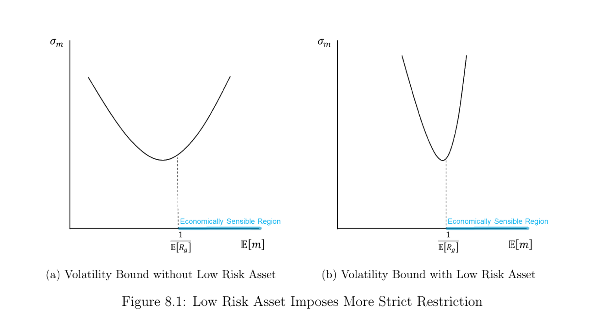
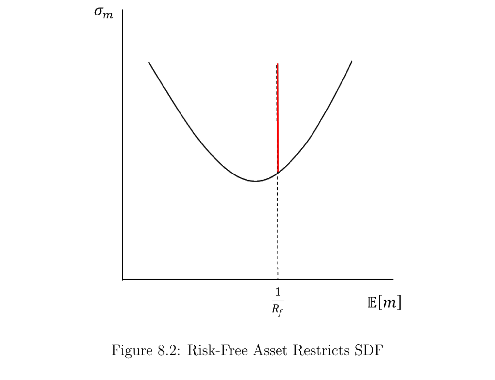
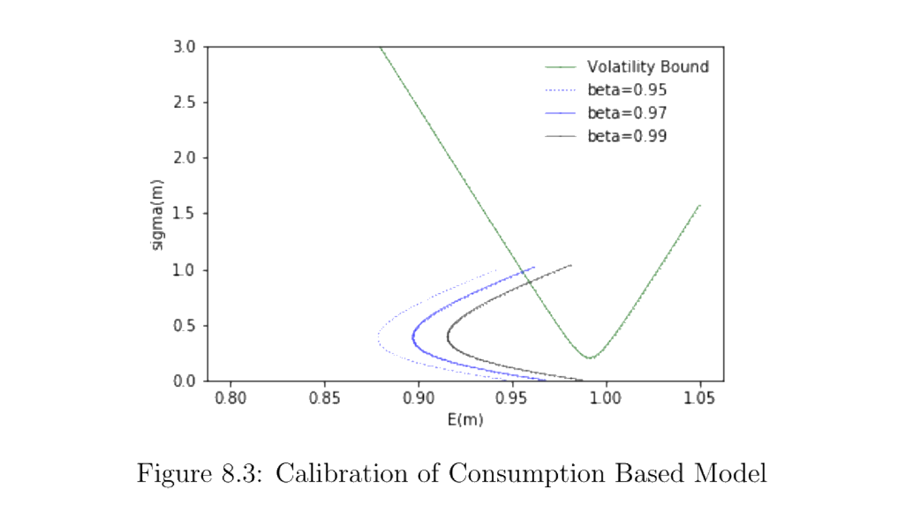

8. The Dual Puzzle
Part II 转向资产定价之谜及其可能的解释。本章先确立核心难题——"双重之谜" (dual puzzle)：消费基础的 CRRA 模型同时被两个事实拒绝。(i) 股权溢价之谜 (equity premium puzzle)——要让模型匹配观测到的 6% 股权溢价，需要高得离谱的相对风险厌恶 \(\gamma\approx20\)；(ii) 无风险利率之谜 (risk-free rate puzzle)——这么高的 \(\gamma\) 又会推出远高于现实的无风险利率。Hansen–Singleton (1982) 用 GMM 检验欧拉方程直接拒绝该模型；Hansen–Jagannathan 波动率界给出几何刻画（低风险资产使可行 SDF 区域急剧收缩）；Mehra–Prescott (1985) 用一个两状态 Markov 禀赋经济把双重之谜显式算出。最后汇总其它经验之谜（波动率、可预测性、横截面、总统周期、组合配置）。
Part II turns to asset pricing puzzles and their candidate explanations. This chapter establishes the central difficulty — the "dual puzzle": the consumption-based CRRA model is rejected by two facts at once. (i) The equity premium puzzle — matching the observed 6% equity premium requires an implausibly high relative risk aversion \(\gamma\approx20\); (ii) the risk-free rate puzzle — such a high \(\gamma\) then implies a risk-free rate far above what is observed. Hansen–Singleton (1982) reject the model directly via a GMM test of the Euler equation; the Hansen–Jagannathan volatility bound gives a geometric picture (a low-risk asset sharply shrinks the feasible SDF region); Mehra–Prescott (1985) compute the dual puzzle explicitly in a two-state Markov endowment economy. We close with a survey of other empirical puzzles (volatility, predictability, cross-section, presidential cycle, portfolio allocation).
8.1 Tests of the Stochastic Euler Equation: Hansen and Singleton (1982)
Hansen and Singleton (1982) 用 GMM 检验消费基础模型隐含的随机欧拉方程 (1.5)。其条件形式对任意资产 \(i\) 为
Hansen and Singleton (1982) use GMM to test the stochastic Euler equation (1.5) implied by consumption-based models. Its conditional version for any asset \(i\) is
$$p^i_t=\mathbb E\!\left[\frac{\beta u'(C_{t+1})}{u'(C_t)}x^i_{t+1}\,\Big|\,\mathcal F_t\right]\ \Rightarrow\ 1=\mathbb E\!\left[\frac{\beta u'(C_{t+1})}{u'(C_t)}R^i_{t,t+1}\,\Big|\,\mathcal F_t\right].\tag{8.1}$$
其中 \(C_t,C_{t+1}\) 是 \(t,t+1\) 期消费，\(R^i_{t,t+1}\) 是资产 \(i\) 从 \(t\) 到 \(t+1\) 的总收益，\(\mathcal F_t\) 是 \(t\) 期信息。取 CRRA 效用 \(u(C)=\frac{C^{1-\gamma}-1}{1-\gamma}\) 代入 (8.1)：
where \(C_t,C_{t+1}\) are consumption in \(t,t+1\), \(R^i_{t,t+1}\) is asset \(i\)'s gross return from \(t\) to \(t+1\), and \(\mathcal F_t\) is the period-\(t\) information set. With CRRA utility \(u(C)=\frac{C^{1-\gamma}-1}{1-\gamma}\) plugged into (8.1):
$$1=\mathbb E\!\left[\beta\Big(\frac{C_{t+1}}{C_t}\Big)^{-\gamma}R^i_{t,t+1}\,\Big|\,\mathcal F_t\right].\tag{8.2}$$
用 \(t\) 期信息中的工具变量 (instrument) 向量 \(\mathbf y_t\in\mathcal F_t\)，把条件矩转成可估计的无条件矩条件 (8.3)：
Using an instrument vector \(\mathbf y_t\in\mathcal F_t\) from the period-\(t\) information set, turn the conditional moment into an estimable unconditional moment restriction (8.3):
$$\mathbb E\!\left[\left(\beta\Big(\frac{C_{t+1}}{C_t}\Big)^{-\gamma}R^i_{t,t+1}-1\right)\mathbf y_t\right]=0.\tag{8.3}$$
用 GMM 估计 \((\beta,\gamma)\)。Hansen–Singleton 的发现：无论怎样校准相对风险厌恶 \(\gamma\)，(8.3) 的矩条件都不被满足——消费基础的 CRRA 模型与数据不符。这个不符同时表现为两个谜，合称双重之谜。
工具变量的选择。 \(\mathbf y_t\) 应取 \(t\) 期可观测、且与消费增长、资产收益相关的变量（如滞后的消费增长、收益、价格-红利比），相关性越强检验越有力。
Estimate \((\beta,\gamma)\) by GMM. Hansen–Singleton's finding: no matter how the relative risk aversion \(\gamma\) is calibrated, the moment restriction (8.3) is not satisfied — the consumption-based CRRA model disagrees with the data. This disagreement shows up as two puzzles at once, jointly the dual puzzle.
Choosing instruments. \(\mathbf y_t\) should be period-\(t\) observable variables correlated with consumption growth and asset returns (e.g. lagged consumption growth, returns, price-dividend ratio); stronger correlation makes the test more powerful.
8.2 Equity Premium Puzzle
由 (8.2)，对无条件期望（迭代期望律）有 (8.4)：
From (8.2), taking unconditional expectations (law of iterated expectations) gives (8.4):
$$1=\mathbb E\!\left[\beta\Big(\frac{C_{t+1}}{C_t}\Big)^{-\gamma}R^i_{t,t+1}\right].\tag{8.4}$$
记 \(c_t=\ln C_t\)，\(\Delta c_{t+1}=c_{t+1}-c_t\)，\(r^i_{t,t+1}=\ln R^i_{t,t+1}\)，则 (8.4) 写成 (8.5)。假设 \((\Delta c_{t+1},r^i_{t,t+1})\) 服从二元正态 (8.6)，用对数正态期望公式展开。
Let \(c_t=\ln C_t\), \(\Delta c_{t+1}=c_{t+1}-c_t\), \(r^i_{t,t+1}=\ln R^i_{t,t+1}\). Then (8.4) becomes (8.5). Assume \((\Delta c_{t+1},r^i_{t,t+1})\) is bivariate normal (8.6), and expand with the log-normal expectation formula.
$$1=\mathbb E\!\left[e^{\ln\beta-\gamma\Delta c_{t+1}+r^i_{t,t+1}}\right].\tag{8.5}$$
证明 / Proof：股权溢价 \(\mathbb E[R^i]-\mathbb E[R^f]\approx\gamma\,\mathrm{Cov}(\Delta c,r^i)\)
对 (8.5) 取对数并用 \(\ln\mathbb E[e^X]=\mathbb E[X]+\frac12\mathrm{Var}(X)\)（\(X\) 正态），得风险资产 (8.7) 与无风险资产 (8.8)：
Take logs of (8.5) and use \(\ln\mathbb E[e^X]=\mathbb E[X]+\frac12\mathrm{Var}(X)\) (\(X\) normal), giving the risky asset (8.7) and the risk-free asset (8.8):
$$0=\ln\beta-\gamma\mathbb E[\Delta c_{t+1}]+\mathbb E[r^i_{t,t+1}]+\tfrac12\Big(\gamma^2\mathrm{Var}(\Delta c_{t+1})+\mathrm{Var}(r^i_{t,t+1})-2\gamma\mathrm{Cov}(\Delta c_{t+1},r^i_{t,t+1})\Big).\tag{8.7}$$
$$0=\ln\beta-\gamma\mathbb E[\Delta c_{t+1}]+r^f_{t,t+1}+\tfrac12\gamma^2\mathrm{Var}(\Delta c_{t+1}).\tag{8.8}$$
(8.7) 减 (8.8) 消去 \(\ln\beta,\gamma\mathbb E[\Delta c]\) 项 (8.9)：
Subtracting (8.8) from (8.7) cancels the \(\ln\beta\) and \(\gamma\mathbb E[\Delta c]\) terms (8.9):
$$\gamma\,\mathrm{Cov}(\Delta c_{t+1},r^i_{t,t+1})=\mathbb E[r^i_{t,t+1}]+\tfrac12\mathrm{Var}(r^i_{t,t+1})-r^f_{t,t+1}.\tag{8.9}$$
再用 \(\mathbb E[R^i]\approx1+\mathbb E[r^i]+\frac12\mathrm{Var}(r^i)\)、\(R^f\approx1+r^f\) (8.10) 整理为 (8.11)、(8.12)：
Using \(\mathbb E[R^i]\approx1+\mathbb E[r^i]+\frac12\mathrm{Var}(r^i)\) and \(R^f\approx1+r^f\) (8.10), rearrange to (8.11), (8.12):
$$\mathbb E[R^i_{t,t+1}]-\mathbb E[R^f_{t,t+1}]\approx\gamma\,\mathrm{Cov}(\Delta c_{t+1},r^i_{t,t+1}).\quad\blacksquare\tag{8.12}$$
(8.12) 对市场组合 \(R^m\) 也成立 (8.13)：
(8.12) also holds for the market portfolio \(R^m\) (8.13):
代入经验事实：\(\mathbb E[R^i]\approx1.07\)，\(\mathbb E[R^f]\approx1.01\)，\(\mathbb E[\Delta c]\approx0.0172\)，\(\mathrm{Var}(\Delta c)\approx(0.036)^2\)，\(\mathrm{Cov}(\Delta c,r^m)\approx0.003\)。代入 (8.13)：
Plugging in the empirical facts \(\mathbb E[R^i]\approx1.07\), \(\mathbb E[R^f]\approx1.01\), \(\mathbb E[\Delta c]\approx0.0172\), \(\mathrm{Var}(\Delta c)\approx(0.036)^2\), \(\mathrm{Cov}(\Delta c,r^m)\approx0.003\) into (8.13):
$$1.07-1.01\approx\gamma\times0.003\ \Rightarrow\ \gamma\approx20.$$
经验证据通常认为 \(\gamma\) 远小于 20，故 \(\gamma\approx20\) 高得不合理——这就是股权溢价之谜。
Empirical evidence usually suggests \(\gamma\) way lower than 20, so \(\gamma\approx20\) is implausibly high — this is the equity premium puzzle.
8.3 Risk-Free Rate Puzzle
由 (8.8) 解出无风险利率：
Solve (8.8) for the risk-free rate:
$$\mathbb E[r^f_{t,t+1}]\approx-\ln\beta+\gamma\,\mathbb E[\Delta c_{t+1}]-\tfrac12\gamma^2\,\mathrm{Var}(\Delta c_{t+1}).$$
代入不同 \((\beta,\gamma)\) 得隐含无风险总收益（表 8.1）。\(-\ln\beta\) 项随耐心下降（\(\beta\) 减小）上升；\(\gamma\mathbb E[\Delta c]\) 项随 \(\gamma\) 上升而推高利率（消费增长 → 想借入 → 利率高）；但 \(-\frac12\gamma^2\mathrm{Var}(\Delta c)\) 是 \(\gamma\) 的二次负项（预防性储蓄 → 压低利率）。
表 8.1：隐含无风险总收益 \(R^f_{t,t+1}\)
| \(\gamma\) | \(\beta=1\) | \(\beta=0.98\) | \(\beta=0.95\) |
|---|---|---|---|
| 1 | 1.017 | 1.037 | 1.068 |
| 5 | 1.070 | 1.090 | 1.121 |
| 10 | 1.085 | 1.105 | 1.136 |
| 25 | 1.025 | 1.045 | 1.076 |
| 30 | 0.933 | 0.953 | 0.984 |
| 50 | 0.240 | 0.260 | 0.291 |
Plugging in different \((\beta,\gamma)\) gives the implied gross risk-free return (Table 8.1). The \(-\ln\beta\) term rises as patience falls (smaller \(\beta\)); the \(\gamma\mathbb E[\Delta c]\) term pushes the rate up with \(\gamma\) (consumption growth → want to borrow → high rate); but \(-\frac12\gamma^2\mathrm{Var}(\Delta c)\) is a negative quadratic in \(\gamma\) (precautionary saving → lower rate).
Table 8.1: Implied gross risk-free rate \(R^f_{t,t+1}\)
| \(\gamma\) | \(\beta=1\) | \(\beta=0.98\) | \(\beta=0.95\) |
|---|---|---|---|
| 1 | 1.017 | 1.037 | 1.068 |
| 5 | 1.070 | 1.090 | 1.121 |
| 10 | 1.085 | 1.105 | 1.136 |
| 25 | 1.025 | 1.045 | 1.076 |
| 30 | 0.933 | 0.953 | 0.984 |
| 50 | 0.240 | 0.260 | 0.291 |
当 \(\gamma\) 取股权溢价所需的高值时，隐含无风险利率远高于实际观测的 \(\approx1.01\)；要把利率压回现实，又需要 \(\beta>1\)（负的时间偏好，不合理）。无风险利率之谜。
Remark 8.1。 股权溢价之谜与无风险利率之谜互相绑定：没有任何一对 \((\beta,\gamma)\) 校准能同时匹配观测到的股权溢价和无风险利率。两者合称双重之谜。
When \(\gamma\) takes the high value needed for the equity premium, the implied risk-free rate is far above the observed \(\approx1.01\); to push it back to reality one needs \(\beta>1\) (a negative time preference, unreasonable). The risk-free rate puzzle.
Remark 8.1. The equity premium and risk-free rate puzzles are bound together: no calibration of \((\beta,\gamma)\) matches both the observed equity premium and the risk-free rate simultaneously. Jointly they are the dual puzzle.
8.4 Volatility Bound and Its Relation to the Dual Puzzle
由 Hansen–Jagannathan 界 (5.17)，\(\frac{\sigma_m}{\mathbb E[m]}\ge\frac{|\mathbb E[R]-R_f|}{\sigma_R}\)，在 \((\mathbb E[m],\sigma_m)\) 平面上生成双曲线 (5.18)（\(A,B,C\) 同 §2.1.2）。低风险资产会大幅收缩可行 SDF 区域。
By the Hansen–Jagannathan bound (5.17), \(\frac{\sigma_m}{\mathbb E[m]}\ge\frac{|\mathbb E[R]-R_f|}{\sigma_R}\), which traces a hyperbola (5.18) in the \((\mathbb E[m],\sigma_m)\) plane (with \(A,B,C\) as in §2.1.2). A low-risk asset sharply shrinks the feasible SDF region.

图 8.1：(a) 无低风险资产时的 SDF 波动率界；(b) 加入低风险资产（如国库券）后，可行区域急剧收窄——经济上合理的 SDF 必须落在更窄的喇叭口内。
Figure 8.1: (a) the SDF volatility bound without a low-risk asset; (b) adding a low-risk asset (e.g. T-bill) sharply narrows the feasible region — an economically sensible SDF must sit inside a much tighter cone.
进一步，若给定无风险总收益 \(R_f\)，则可行 SDF 必有 \(\mathbb E[m]=\frac{1}{R_f}\)，对应图 8.2 的红线。
Further, given the risk-free gross return \(R_f\), a feasible SDF must have \(\mathbb E[m]=\frac{1}{R_f}\), the red line in Figure 8.2.

图 8.2：给定 \(R_f\)，可行 SDF 只能落在 \(\mathbb E[m]=1/R_f\) 这条竖红线与双曲线相交以上的部分。
Figure 8.2: given \(R_f\), feasible SDFs lie only on the vertical red line \(\mathbb E[m]=1/R_f\), above its intersection with the hyperbola.
揭示双重之谜。 由 CRRA SDF (1.12) \(m_{t+1}=\beta(\frac{C_{t+1}}{C_t})^{-\gamma}\)，设 \(\Delta c_{t+1}\sim\mathcal N(\mathbb E[\Delta c_{t+1}],\sigma_c^2)\)，由对数正态 (8.14)：
Revealing the dual puzzle. From the CRRA SDF (1.12) \(m_{t+1}=\beta(\frac{C_{t+1}}{C_t})^{-\gamma}\), with \(\Delta c_{t+1}\sim\mathcal N(\mathbb E[\Delta c_{t+1}],\sigma_c^2)\), log-normality gives (8.14):
$$\mathbb E[m_{t+1}]=e^{\ln\beta-\gamma\mathbb E[\Delta c_{t+1}]+\frac{\gamma^2}{2}\sigma_c^2}.\tag{8.14}$$
又 \(\mathbb E[m_{t+1}^2]=\mathbb E[m_{t+1}]^2 e^{\gamma^2\sigma_c^2}\)，故 \(\sigma_{m_{t+1}}=\mathbb E[m_{t+1}]\sqrt{e^{\gamma^2\sigma_c^2}-1}\)，于是夏普比上界对 \(\gamma\) 单调递增 (8.15)：
And \(\mathbb E[m_{t+1}^2]=\mathbb E[m_{t+1}]^2 e^{\gamma^2\sigma_c^2}\), so \(\sigma_{m_{t+1}}=\mathbb E[m_{t+1}]\sqrt{e^{\gamma^2\sigma_c^2}-1}\), making the Sharpe-ratio bound monotonically increasing in \(\gamma\) (8.15):
$$\frac{\partial\,(\sigma_{m_{t+1}}/\mathbb E[m_{t+1}])}{\partial\gamma}=\frac{\gamma\sigma_c^2\,e^{\gamma^2\sigma_c^2}}{\sqrt{e^{\gamma^2\sigma_c^2}-1}}>0.\tag{8.15}$$

图 8.3：绿线为 Hansen–Jagannathan 波动率界，其余三条为消费基础 SDF 的 \((\mathbb E[m],\sigma_m)\) 曲线（\(\beta=0.95,0.97,0.99\)，\(\gamma\) 从 1 到 70）。随 \(\gamma\) 增大曲线先左上、后右上移动。
Figure 8.3: the green line is the Hansen–Jagannathan volatility bound; the other three are the \((\mathbb E[m],\sigma_m)\) curves of the consumption-based SDF (\(\beta=0.95,0.97,0.99\), \(\gamma\) from 1 to 70). As \(\gamma\) grows the curve moves up-left first, then up-right.
- 要让 SDF 曲线进入可行区域，需要极高的 \(\gamma\)（如 \(\ge60\)）——远超合理值，故股权溢价之谜未解。
- 这么高的 \(\gamma\) 又会（由表 8.1）使 \(R^f<1\)、\(r^f\) 为负，无风险利率之谜未解。
- 故双重之谜未被消费基础模型解决。出路在于：能否在不大幅提高 \(\gamma\) 的前提下提高 SDF 的方差（让 SDF 进入可行区、用合理 \(\gamma\) 产生高溢价）——这正是后续各章（Epstein–Zin、不完全市场、罕见事件、习惯）的思路。
Remark 8.2。 Hansen–Jagannathan 界只是诊断检验而非统计检验：满足它是 SDF 可接受的必要非充分条件——通过它只说明该 SDF 有潜力为市场组合定价，并不证明它正确。
- For the SDF curve to enter the feasible region, \(\gamma\) must be extremely high (e.g. \(\ge60\)) — far beyond plausible values, so the equity premium puzzle is not resolved.
- Such a high \(\gamma\) then (by Table 8.1) makes \(R^f<1\) and \(r^f\) negative, so the risk-free rate puzzle is not resolved.
- Hence the dual puzzle is not solved by the consumption-based model. The way out: can we raise the SDF's variance without raising \(\gamma\) much (so the SDF enters the feasible region and generates a high premium with a reasonable \(\gamma\))? This is exactly the idea behind the following chapters (Epstein–Zin, incomplete markets, rare events, habit).
Remark 8.2. The Hansen–Jagannathan bound is only a diagnostic test, not a statistical test: satisfying it is a necessary but not sufficient condition for an acceptable SDF — passing it only shows the SDF has the potential to price the market portfolio, not that it is correct.
8.5 Alternative Modeling for the Dual Puzzle: Mehra and Prescott (1985)
8.5.1 Setup
单一代表性家庭，最大化 \(\mathbb E_0[\sum_{t=0}^\infty\beta^t u(c_t)]\)，\(\beta\in(0,1)\)，CRRA \(u(c)=\frac{c^{1-\gamma}-1}{1-\gamma}\)。唯一企业生产消费品；其股权竞争性交易，市场收益即该企业收益。企业每期产出（实物消费品）与红利（名义法币）都等于 \(y_t\)，\(y_t\) 服从 Markov 过程
A single representative household maximizes \(\mathbb E_0[\sum_{t=0}^\infty\beta^t u(c_t)]\), \(\beta\in(0,1)\), CRRA \(u(c)=\frac{c^{1-\gamma}-1}{1-\gamma}\). A single firm produces the consumption good; its equity is competitively traded and the market return is the firm's return. Each period the firm's output (real consumption good) and dividend payment (nominal fiat money) both equal \(y_t\), with \(y_t\) following a Markov process
$$y_{t+1}=x_{t+1}\,y_t,\qquad x_{t+1}\in\Lambda=\{\lambda_1,\dots,\lambda_n\},\quad \mathbb P\{x_{t+1}=\lambda_j\mid x_t=\lambda_i\}=\phi_{ij},$$
其中增长率 \(\lambda_j>0\)、\(y_0>0\)。股权在每期 \(y_t\) 揭示后、除权交易。
with growth rates \(\lambda_j>0\) and \(y_0>0\). Equity is traded ex-dividend at the beginning of each period right after \(y_t\) is revealed.
8.5.2 Equilibrium Condition
市场出清要求每期红利全被消费：\(y_t=c_t\)。股权永远持有，由 CRRA SDF (1.12) 与欧拉方程，价格 (8.16)：
Market clearing requires the dividend to be fully consumed each period: \(y_t=c_t\). Equity is held forever; by the CRRA SDF (1.12) and the Euler equation, the price (8.16):
$$p^e(c,i)=\mathbb E\!\left[\sum_{s=t+1}^\infty\beta^{s-t}\Big(\frac{y_s}{y_t}\Big)^{-\gamma}y_s\ \Big|\ c,\,x_t=\lambda_i\right].\tag{8.16}$$
价格对 \(c\) 一次齐次，得递归 (8.17)，猜测 \(p^e(c,i)=w_i c\) (8.18)，代入得 \(n\) 元线性方程组 (8.19)，解出 \(\{w_1,\dots,w_n\}\) 作为 \((\beta,\gamma)\) 的函数：
The price is homogeneous of degree one in \(c\), giving the recursion (8.17); conjecture \(p^e(c,i)=w_i c\) (8.18), substitute to get a system of \(n\) linear equations (8.19), and solve for \(\{w_1,\dots,w_n\}\) as functions of \((\beta,\gamma)\):
$$p^e(c,i)=\beta\sum_{j=1}^n\phi_{ij}\lambda_j^{-\gamma}\big(p^e(c\lambda_j,j)+\lambda_j c\big).\tag{8.17}$$
$$w_i=\beta\sum_{j=1}^n\phi_{ij}\lambda_j^{-\gamma}\big(w_j\lambda_j+\lambda_j\big),\qquad i=1,\dots,n.\tag{8.19}$$
8.5.3 Reveal the Dual Puzzle
收益。 条件风险净收益 (8.20)、无条件 (8.21)：
Returns. Conditional risky net return (8.20), unconditional (8.21):
$$r^e_i=\sum_{j=1}^n\phi_{ij}r^e_{ij},\qquad r^e_{ij}=\frac{p^e(c\lambda_j,j)+\lambda_j c}{p^e(c,i)}-1.\tag{8.20}$$
$$r^e=\sum_{i=1}^n\pi_i r^e_i,\tag{8.21}$$
其中 \(\pi\) 为平稳分布。无风险收益。 价格 \(p^f_i=\beta\sum_j\phi_{ij}\lambda_j^{-\gamma}\)，条件净收益 (8.22)、无条件 (8.23)：
where \(\pi\) is the stationary distribution. Risk-free return. Price \(p^f_i=\beta\sum_j\phi_{ij}\lambda_j^{-\gamma}\), conditional net return (8.22), unconditional (8.23):
$$r^f_i=\frac{1}{p^f_i}-1,\tag{8.22}$$
$$r^f=\sum_{i=1}^n\pi_i r^f_i.\tag{8.23}$$
Mehra–Prescott (1985) 分步揭示双重之谜：
- 假设： 仅两状态 \(\lambda_1=1+\mu+\sigma\)、\(\lambda_2=1+\mu-\sigma\)，转移矩阵 \(\mathbb P=\begin{bmatrix}\psi&1-\psi\\1-\psi&\psi\end{bmatrix}\)。
- 校准： 用美国 1889–1978 数据，得 \(\mu=1.8\%\)、\(\sigma=0.036\)、\(\psi=0.43\)。
- 求解 \(\{w_i\}\)：把 \((\mu,\sigma,\psi)\) 代入 (8.19)，解出 \(\{w_i\}\) 为 \((\beta,\gamma)\) 的函数。
- 算预测收益： 股权由 (8.20)、(8.21)；无风险由 (8.22)、(8.23)。
- 揭示双重之谜： 在 \((r^f,r^e)\) 平面上，模型对不同 \((\beta,\gamma)\) 给出一族点；但真实数据点 \((\hat r^f,\hat r^e)\) 无法由任何一对 \((\beta,\gamma)\) 复现——双重之谜。
两种视角是一致的。 §8.2–8.4 用对数正态近似与波动率界刻画双重之谜；Mehra–Prescott 用离散 Markov 禀赋经济精确求解。结论相同：合理参数下模型给不出观测到的高股权溢价 + 低无风险利率组合。
Mehra–Prescott (1985) reveal the dual puzzle step by step:
- Assumptions: only two states \(\lambda_1=1+\mu+\sigma\), \(\lambda_2=1+\mu-\sigma\), with transition matrix \(\mathbb P=\begin{bmatrix}\psi&1-\psi\\1-\psi&\psi\end{bmatrix}\).
- Calibration: using U.S. data 1889–1978, \(\mu=1.8\%\), \(\sigma=0.036\), \(\psi=0.43\).
- Solve \(\{w_i\}\): plug \((\mu,\sigma,\psi)\) into (8.19) and solve \(\{w_i\}\) as functions of \((\beta,\gamma)\).
- Compute predicted returns: equity from (8.20), (8.21); risk-free from (8.22), (8.23).
- Reveal the dual puzzle: in the \((r^f,r^e)\) plane the model produces a family of points over \((\beta,\gamma)\); but the actual data point \((\hat r^f,\hat r^e)\) cannot be reproduced by any pair \((\beta,\gamma)\) — the dual puzzle.
The two views agree. §8.2–8.4 characterize the dual puzzle with the log-normal approximation and the volatility bound; Mehra–Prescott solve a discrete Markov endowment economy exactly. Same conclusion: under reasonable parameters the model cannot deliver the observed high equity premium together with the low risk-free rate.
8.6 Summary of Other Asset Pricing Puzzles
8.6.1 Volatility Puzzle
收益波动率（≈16%）远高于红利波动率（≈7%）。若价格-红利比恒定 \(P_t=hD_t\)，则 \(dP_t=h\,dD_t\)，于是 (8.24)：
Return volatility (≈16%) is much higher than dividend volatility (≈7%). If the price-dividend ratio is constant, \(P_t=hD_t\), then \(dP_t=h\,dD_t\), giving (8.24):
$$\frac{dP_t}{P_t}=\frac{dD_t}{D_t}\ \Rightarrow\ \sigma_P=\sigma_D.\tag{8.24}$$
即收益波动率应等于红利波动率；但实证上 \(\sigma_P\approx16\%\gg\sigma_D\approx7\%\)——波动率之谜（Shiller）。
i.e. return volatility should equal dividend volatility; but empirically \(\sigma_P\approx16\%\gg\sigma_D\approx7\%\) — the volatility puzzle (Shiller).
8.6.2 Predictability Puzzle
市场收益可由（时变的）红利收益率预测，而红利增长不可预测。年化收益波动率本身随时间剧烈变动：1930 年代、2008–2009 高达 60–70%，1960 年代仅约 5%。且收益波动率与价格/盈余比负相关：危机 → 高波动、市场前景差 → 低价盈比；反之太平时期 → 低波动、前景好 → 高价盈比。
Market returns are predictable by the (time-varying) dividend yield, while dividend growth is not. Annualized return volatility itself varies wildly over time: 60–70% in the 1930s and 2008–2009, only about 5% in the 1960s. And return volatility is negatively correlated with the price/earnings ratio: a crisis → high volatility, poor market prospects → low P/E; conversely peaceful times → low volatility, good prospects → high P/E.
8.6.3 Cross-Sectional Predictability Puzzle
由 C-CAPM (1.23) 收益由与消费的协方差决定，由 CAPM (2.25) 由与市场的协方差决定；但按规模、账面市值比分组的组合收益无法用与 SDF 或市场收益的协方差解释。Fama–French 等多因子模型有效，却缺乏结构性的微观基础。
By C-CAPM (1.23) returns are pinned down by covariance with consumption, and by CAPM (2.25) by covariance with the market; but size-sorted and book-to-market-sorted portfolio returns cannot be explained by covariances with the SDF or the market return. Fama–French and other multi-factor models work but lack a structural microfoundation.
8.6.4 Presidential Cycle Puzzle
美国股票超额收益在民主党总统任期内总是高于共和党任期。用预测回归 \(R_{t\to t+s}=\alpha+\beta z_t+\varepsilon_{t+s}\)，对预测变量 \(z_t\)（对数红利收益率、对数盈余收益率、账面市值比）系数 \(\beta\) 在某些预测变量上显著。
U.S. stock excess returns are always higher under Democratic presidential terms than Republican terms. In a predictive regression \(R_{t\to t+s}=\alpha+\beta z_t+\varepsilon_{t+s}\), the coefficient \(\beta\) is significant for some predictors \(z_t\) (log dividend yield, log earnings yield, book-to-market ratio).
8.6.5 Portfolio Allocation Puzzles
- 参与之谜： 许多家庭根本不参与股市，而标准分析（§1.4.4）认为人人都应参与。
- 投资过少： 参与者投入的市场份额低于理论建议。
- 生命周期之谜： 恒定投资机会集下应持有恒定比例（由 (6.36)），与年龄无关；但现实中投资者在前半生增加、后半生减少。
- 本土偏好 (home bias)： 分散化要求投资于其它公司，但人们倾向于持有本国/本公司股权。
- Participation puzzle: many households do not participate in the stock market, while standard analysis (§1.4.4) says everyone should.
- Under-investment: those who do participate invest a smaller market share than theory suggests.
- Life-cycle puzzle: under a constant investment opportunity set one should hold a constant fraction (by (6.36)), regardless of age; but in reality investors increase investment in the first half of life and decrease it in the second.
- Home bias: diversification calls for investing in other companies, yet people tend to hold domestic / own-company equity.
References
- Hansen, L. P. and K. J. Singleton (1982). Generalized Instrumental Variables Estimation of Nonlinear Rational Expectations Models. Econometrica 50(5), 1269–1286.
- Hansen, L. P. and R. Jagannathan (1991). Implications of Security Market Data for Models of Dynamic Economies. Journal of Political Economy 99(2), 225–262.
- Mehra, R. and E. C. Prescott (1985). The Equity Premium: A Puzzle. Journal of Monetary Economics 15(2), 145–161.
- Shiller, R. J. (1981). Do Stock Prices Move Too Much to be Justified by Subsequent Changes in Dividends? The American Economic Review 71(3), 421–436.
- Weil, P. (1989). The Equity Premium Puzzle and the Risk-Free Rate Puzzle. Journal of Monetary Economics 24(3), 401–421.